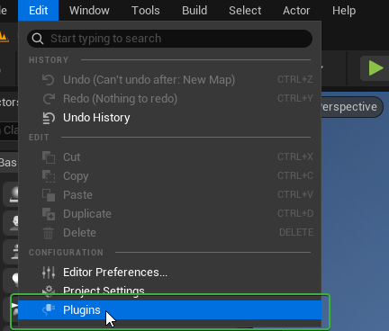
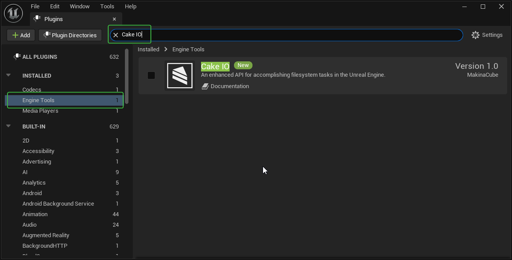
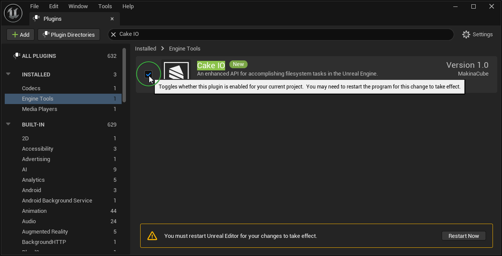

Installation
To use the Cake IO plugin, you first need to either add the plugin to your specific Unreal project or install it to a particular Unreal Engine version. If you are unfamiliar with plugins and how they integrate into the Unreal Engine, please refer to Epic's official documentation.
Installing the Cake IO plugin from the Fab
First, you'll need to install the plugin to the version of the Unreal Engine you are using. For details on that process, please see Epic's official documentation.
Once you have installed Cake IO from Fab to the correct Unreal Engine version, only a few steps are required to integrate it into your projects.
From the Unreal Editor, select Plugins from the Edit menu.

From the Plugins window, either either type "Cake IO" in the search bar or navigate to it via the categories Installed / Engine Tools.

Click the checkbox next to the Cake IO icon to enable the plugin for this project.

Once enabled, you will need to restart the Unreal Editor.
At this point, Blueprint users are good to go. If you are using the C++ API, you will need to add the "CakeIO" module as a dependency to any module that wishes to use it. Just add "CakeIO" to either PublicDependencyModuleNames or PrivateDependencyModuleNames in the consuming module's Build.cs. For example: